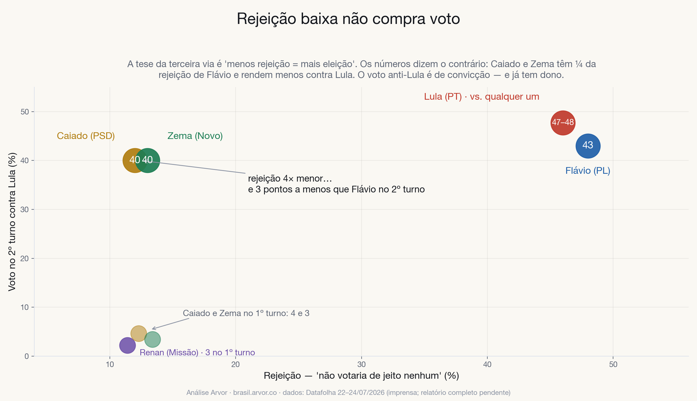

<!-- Bloco: rejeição × rendimento eleitoral — datafolha_072026.html -->
<!-- ESTILO DE PRE-VISUALIZACAO: o dossie final (docs/datafolha_072026.html) usa o
     CSS da casa — remova este bloco <style> ao colar la. Os src das imagens apontam
     para ../../../docs/img/…; na publicacao troque para img/datafolha_072026/…. -->
<style>
  body { margin: 0; background: #faf8f3; }
  .achado {
    max-width: 760px; margin: 0 auto; padding: 48px 24px 64px;
    font-family: "Inter", -apple-system, "Helvetica Neue", Arial, sans-serif;
    color: #14171d; line-height: 1.65; font-size: 17px;
  }
  .achado .kicker {
    text-transform: uppercase; letter-spacing: .14em; font-size: 12px;
    font-weight: 700; color: #b07d10; margin: 0 0 10px;
  }
  .achado h2 {
    font-family: "Fraunces", Georgia, "Times New Roman", serif;
    font-size: 34px; line-height: 1.15; margin: 0 0 18px; color: #14171d;
  }
  .achado p { margin: 0 0 16px; }
  .achado p.metodo {
    font-size: 14.5px; color: #5e6675; background: #ffffff;
    border: 1px solid #dde2ec; border-left: 4px solid #b07d10;
    border-radius: 8px; padding: 14px 16px;
  }
  .achado strong { color: #14171d; }
  .achado figure { margin: 26px 0 8px; }
  .achado figure img {
    width: 100%; height: auto; display: block; border-radius: 12px;
    border: 1px solid #dde2ec; box-shadow: 0 12px 34px rgba(18,24,33,.10);
    background: #fff;
  }
  .achado figcaption { font-size: 13.5px; color: #8b93a3; margin-top: 10px; }
  .achado ul.numeros { margin: 18px 0 0; padding: 0 0 0 20px; }
  .achado ul.numeros li { margin: 0 0 10px; }
</style>
<section class="achado" id="rejeicao">
  <p class="kicker">Achado · rejeição</p>
  <h2>Rejeição baixa não compra voto</h2>
  <p>
    O argumento de estoque da terceira via é: "Flávio tem 48% de rejeição, um nome
    menos rejeitado vai melhor". Os números do próprio Datafolha desmontam a tese:
    Caiado (12% de rejeição) e Zema (13%) têm <strong>um quarto</strong> da rejeição
    de Flávio e mesmo assim rendem <strong>menos</strong> contra Lula — 40 contra 43.
    No 1º turno, a diferença é humilhante: 4 e 3 pontos contra 32. O voto anti-Lula
    não é um fluido que escorre para qualquer recipiente com boa embalagem; é voto de
    convicção, e já tem dono. Rejeição alta é o preço da polarização — e a polarização
    é exatamente o ativo que faz Flávio chegar ao teto de 43.
  </p>
  <figure>
    
    <figcaption>
      Rejeição ("não votaria de jeito nenhum") × desempenho contra Lula. A rejeição
      baixa das terceiras vias não se converte em voto: o teto delas é menor que o de Flávio.
    </figcaption>
  </figure>
</section>
